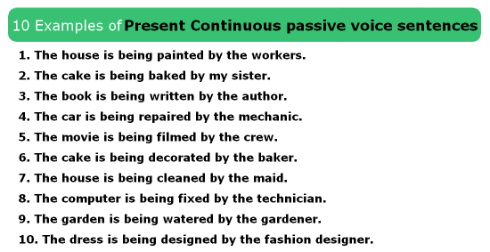

The passive voice in English (passive voice) is a construction used to shift the focus of attention from the subject (who does the action) to the direct object (who receives the action). For example: "Hamlet" was written by William Shakespeare. / “Hamlet” was written by William Shakespeare.
